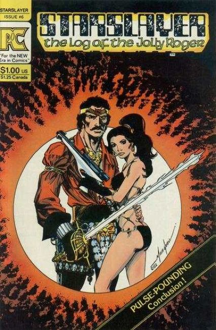
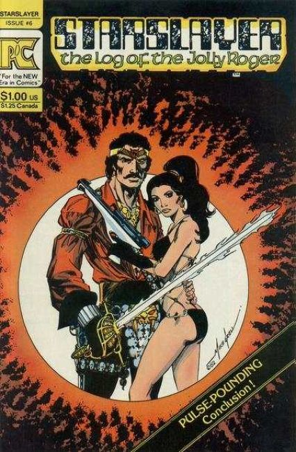

 Mike Grell originally created Starslayer for DC Comics, but plans to publish it were halted after the mass cancellation of titles known as the DC Implosion. Instead, he offered it to Pacific Comics, who released it as a six issue series in 1982.
It was originally intended as an ongoing series per Pacific Comics's publisher Bill Schanes but Grell's developing relationship with the new First Comics and previous working relationship with their editorial director Mike Gold (who had been Grell's editor at DC) swayed him to release future issues with First.
In August 1983 First Comics continued the series, starting with issue #7, with Grell writing and providing breakdown art with finishes by Lenin Delsol. Grell left the series after issue #8, and was replaced by writer John Ostrander and Delsol as sole artist. Later contributors to the series were Tim Truman, Hilary Barta, and Tom Sutton. The final issue, #34, came out November 1985.
Issues 2 & 3 saw the introduction of Dave Stevens' Rocketeer as a back-up feature. In issue #10, the character Grimjack was introduced in the same fashion. He would later receive his own title. Another character that appeared as backup feature was Groo the Wanderer, who also later received his own title at Pacific.
In 1995 Grell released an expanded version of the original limited series through Acclaim Comics. The expanded version, titled Starslayer: The Director's Cut, ran for eight issues.